# Run the application
shinyApp(ui = ui, server = server)Building a Simple Shiny Dashboard in R
Tutorial
Code
Shiny
R
Creating a data dashboard using the R package shinydashboard
What is a Dashboard?
A dashboard is a way to visually represent and explore your data. They are great for communicating findings, but they are also great for data exploration. With a Dashboard you can set a number of outputs (e.g. Plots, Tables) to automatically be displayed depending on your inputs. This means you can create one style of table or plot and generate those at the push of a button for all sorts of different variables.
Getting Started
We will be building our dashboard using shiny in R, specifically we will be using the ShinyDashboard package and will be doing our work in RStudio.
Before we install any packages however, we will need to get our project set up. If you have not used projects before they are essentially self contained directories that keep all your scripts and files working together in one place.
Here we want to create a “Shiny Application” project as follows:
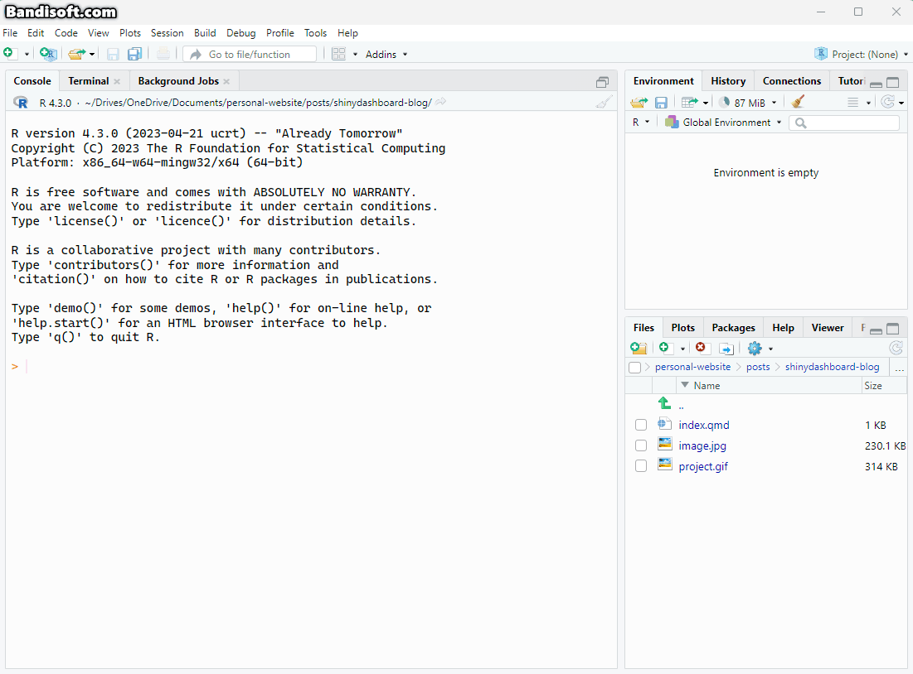
I would always recommend using Git if you know how. renv is also valuable for this kind of project- it creates essentially a sandbox for your version of R packages. Which means that if you update the packages outside of the project, the ones in the project will stay as they were when you installed them (unless you update them inside your project using renv), so no surprise package changes that can break your entire app. It also allows you to export your package library versions too. You can find more about renv here.
This should give you a project that looks something like this:
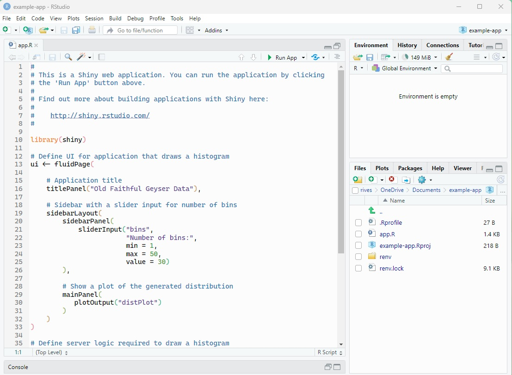
The only important file to worry about here is your app.R file. This is where the app is currently coded up!
You can see what this looks like by hitting Run App in RStudio. This should run the app:
note: if you want the app to run externally (e.g. in a browser instead ofthe RStudio viewer pane) select 'Run External' from the dropdown menu nect to the 'Run App' button
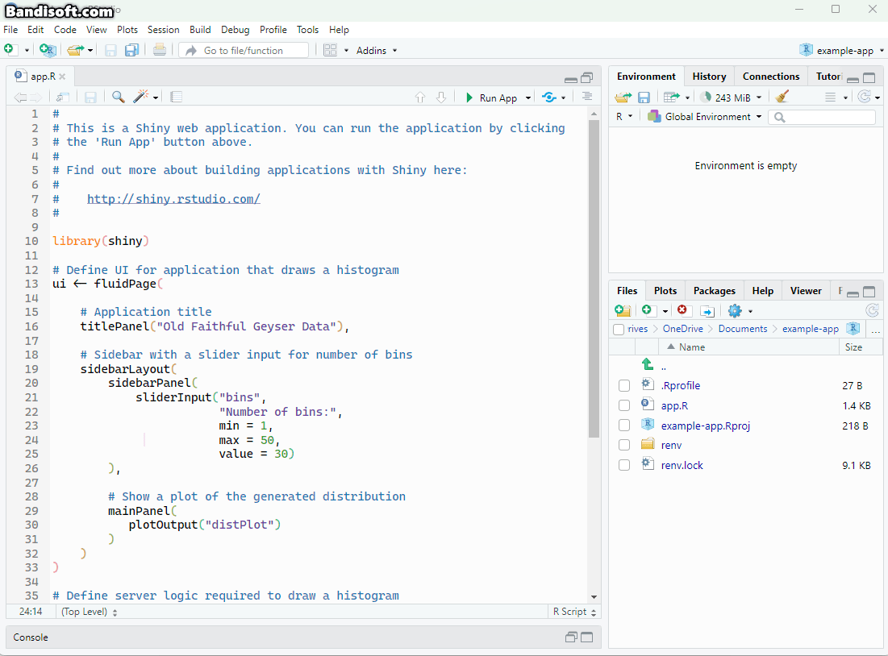
However we are going to do things a slightly different way, using two files instead of one. We are going to have two files, one called server.R and one called ui.R. We will then move the section defining the ui into a new ui.R file, and keep the parts loading packages and defining the server info in a file we’ll save as server.R.
The easiest way to do this is to open a new R Script file cut and paste in the ui scripts, save this as ui.R. Then we will save our old app.R file with the ui information removed as server.R. Then go ahead and delete app.R. We also want to delete the following from the server.R:
You should have two files that look like this:
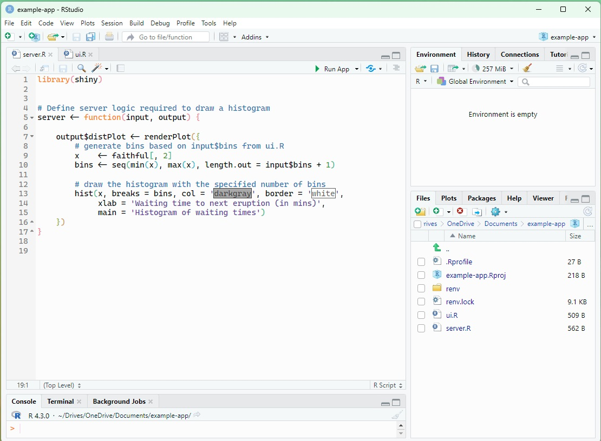
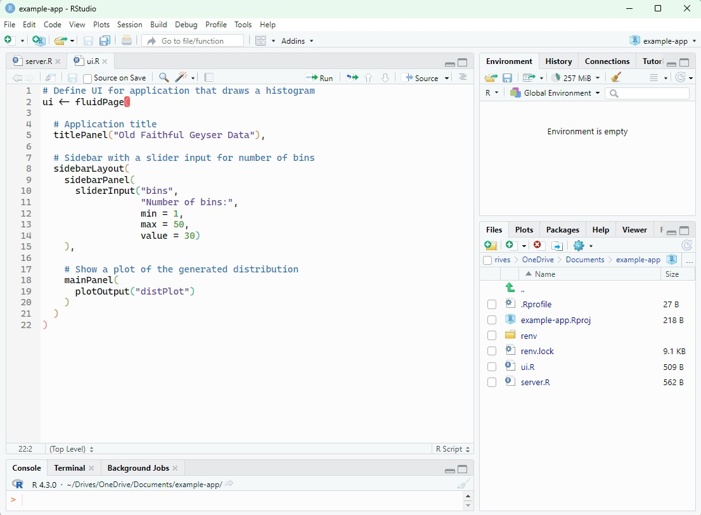
Click Run App again from within the server.R file just to make sure everything is still working!
You can think of ui.R as your front end. This is the file that determines what folks will see on your app, and where they can make inputs and change options. server.ui is the backend, taking the inputs from your ui and running the functions we want to run (e.g making plots).
It is perfectly acceptable to only use the app.R file with all this information in it. But that can become quite hard to handle with longer and more convoluted applications, so its cleaner (in my opinion) to use separate files.
Packages
We will be using ShinyDashboard so we need to install that, we will also be using syntax and ggplot from the Tidyverse so we will install those for now by running this in the console:
install.packages(c("shinydashboard","tidyverse"))We then need to load these up in server.R file so they are loaded with our app. We do this by adding the following to the top of server.R:
library(shiny)
library(shinydashboard)
library(tidyverse)tip: it is typically best practice to only install those sub packages of the Tidyverse that you will actually use, rather than the whole thing. But we will be a bit lazy here.
Creating Our Dashboard
First we need data!
Before we create a dashboard for our data we need some data that we will put in it! For illustration purposes we will simulate (crudely) a super simple dataset. This dataset will be from an imaginary study looking at mental health and exercise in four countries. This will give us a couple of categorical and a couple of numerical variables to put in our dashboard
I have saved this as a .csv, so I will move that .csv file into my project folder and load it into my server.R file from there.
set.seed(1993)
#set our n at 2000
n <- 2000
#create demographic variables
# Generate Age with a random sample of ages betweeen 18 and 70
age <- sample(18:70, n, replace = TRUE)
# Generate sex with four categories with 45% 45% 5% and 5% respectively
sex <- sex <- sample(c("Male", "Female", "Intersex", "Prefer not to say"),
n, replace = TRUE, prob = c(0.45, 0.45, 0.05, 0.05))
# Generate country by randomly sampling from four countries
country <- sample(c("Bonsia", "Thailand", "Egypt", "Peru"), n, replace = TRUE)
# Generate four variables (two anxiety measures, two exercise) by randomly sampling from
trait_anxiety <- pmin(7, pmax(1, rnorm(n, mean = 3.5, sd = 1)))
state_anxiety <- pmin(7, pmax(1, rnorm(n, mean = 3.5, sd = 1)))
subj_ex <- pmin(7, pmax(1, rnorm(n, mean = 3.5, sd = 1)))
obj_ex <- pmin(7, pmax(1, rnorm(n, mean = 3.5, sd = 1)))
#put in dataframe
data <- data.frame(age = age,
sex = sex,
country = country,
trait_anxiety = trait_anxiety,
state_anxiety = state_anxiety,
subjective_exercise = subj_ex,
objective_exercise = obj_ex)
#turn sex and country to factors:
data$sex <- factor(data$sex)
data$country <- factor(data$country)Creating a blank dashboard
Now we have our data generated the first thing we need to do is make our empty dashboard, we can then populate this down the line. We make this by replacing the default ui.R script with the following:
ui <- dashboardPage(
dashboardHeader(),
dashboardSidebar(),
dashboardBody()
)This dashboardPage includes the main elements of the dashboard: the heading, sidebar and body.
We also need to update our server.R script to load the right packages, load our new data, and delete the default stuff from our server function. The server.R file should now look like this.
library(shiny)
library(shinydashboard)
library(tidyverse)
data <- read.csv("data.csv")
server <- function(input, output) {}If you hit Run App now you should see a blank dashboard with a sidebar and a main body:
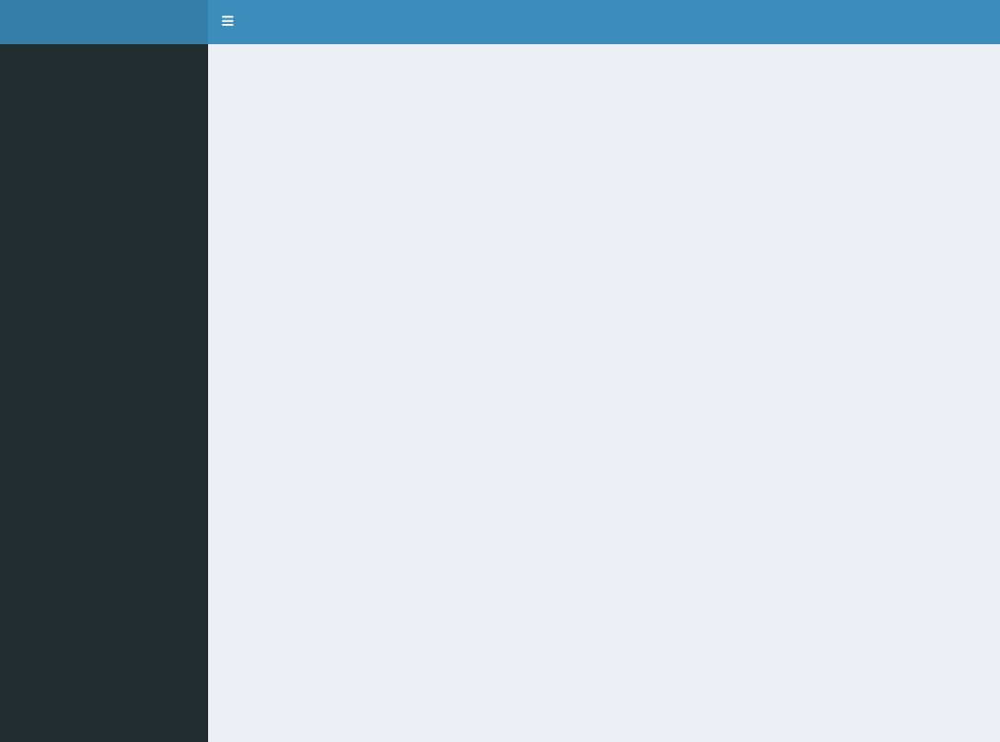
Title
The first simple thing we can do is add a title:
ui <- dashboardPage(
dashboardHeader(title = "Example App"),
dashboardSidebar(),
dashboardBody()
)Settings box
Before we create any content from our data we need to create a settings box to decide what goes into it. The way different elements in ShinyDashboard work is by putting them in boxes, and then those boxes can be used to populate rows. For example, we can create a box for our settings, and a box for our plots aby updating the dashboardBody in ui.R as follows:
ui <- dashboardPage(
dashboardHeader(title = "Example App"),
dashboardSidebar(),
dashboardBody(
#plot box (we will leave this empty for now)
box(
width = 9,
title = "Plots"
),
#settings box
box(
width = 3, #so our plot box is bigger
title = "Settings"
)
)
)random tip: i would STRONGLY reccomend using rainbow parentheses in coding this kind of thing. It essentially makes corresponding open and close brackets mactch colours. Its enabled in Global Options -> Code -> Display. It is also good to use an RStudio theme with good parenthesis highlighting too!
You can now see that we have empty plot and settings boxes.
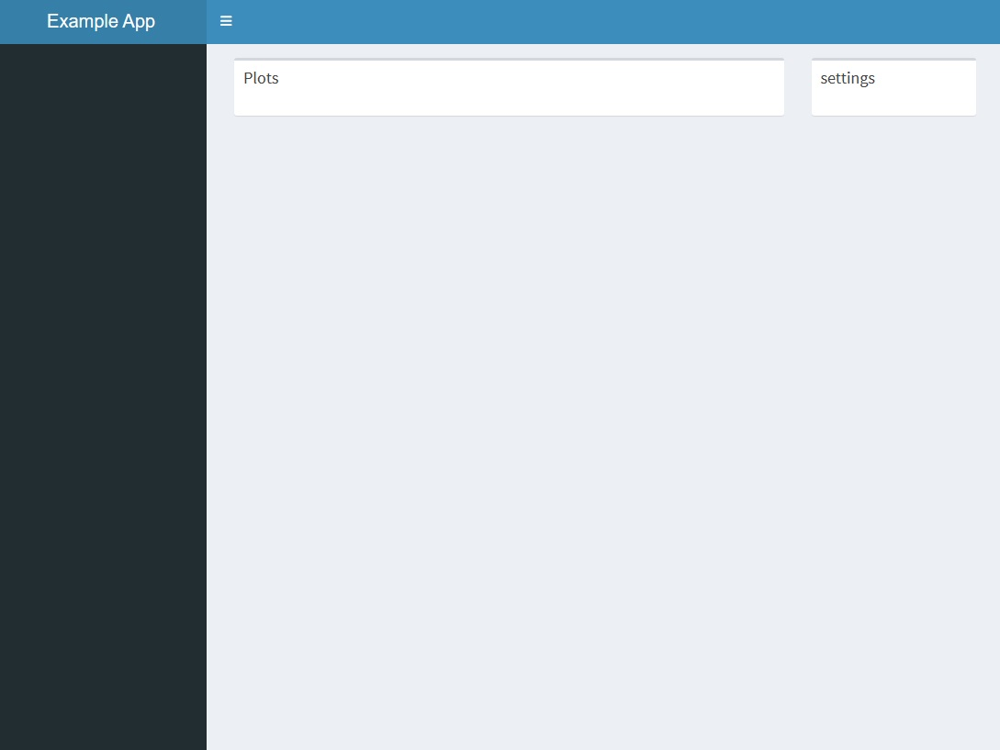
Time to fill them!
the possibilities here are endless. You could add a single menu that allows users to select from predefined plots or tables. Or you could have an incredibly complex system that generates complicated plots on demand. We will do something in the middle. We will create a system that allows users to select what they want on the X and Y axes, and then generate the plots for them.
So we will add simple dropdown menus to select X-Axis and Y-Axis variables for our plots.
Here is how we add the X-Axis option menu using selectInput in our ui.R file:
#settings box
box(
width = 3,
title = "Settings",
selectInput(
#set the label for this input we will use internally
inputId = xaxis,
#the display name/title for this dropdown menu
label = "Select X-Axis Variable",
#here we populate the options for our dropdown menu, and give them better display labels
choices = list ( "Trait Anxiety" = "trait_anxiety",
"State Anxiety" = "state_anxiety",
"Exercise (subjective)" = "subj_ex",
"Exercsie (objective)" = "obj_ex",
"Age" = "age",
"Sex" = "sex"
)
)
)We can now repeat this for the Y-Axis
#settings box
box(
width = 3,
title = "Settings",
selectInput(
inputId = "xaxis",
label = "Select X-Axis Variable",
choices = list ( "Trait Anxiety" = "trait_anxiety",
"State Anxiety" = "state_anxiety",
"Exercise (subjective)" = "subj_ex",
"Exercsie (objective)" = "obj_ex",
"Age" = "age",
"Sex" = "sex",
"Country" = "country")
),
selectInput(
inputId = "yaxis",
label = "Select Y-Axis Variable",
choices = list ( "Trait Anxiety" = "trait_anxiety",
"State Anxiety" = "state_anxiety",
"Exercise (subjective)" = "subj_ex",
"Exercsie (objective)" = "obj_ex",
"Age" = "age",
"Sex" = "sex",
"Country" = "country")
)
)If you now hit Run App you should have something that looks like this, with 2 dropdown menus!
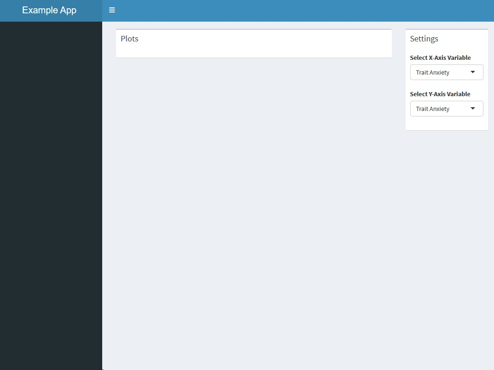
Making our plots
Now we have the menu to select our variables we need to generate the relevant plots, and show them!
The UI part of this is quite simple. Just as we added input options to our settings box, we can add outputs to our plot box. We do this by just adding one line to our ui.R file.
#plot box
box(
width = 9,
title = "Plots",
plotOutput("plot1")
)This will return “plot1! in the plot box. However we have not yet defined this so we will do that now. This requires us to hop over to our server.R file.
As an example we will first imagine that we only have continuous variables as our options. This would make the task quite simple. We would just generate a plot where the data on the x and y axes are defined by our inputs. This is how we create generate outputs in server.R.
We take what we have already…
library(shiny)
library(shinydashboard)
library(tidyverse)
data <- read.csv("data.csv")
server <- function(input, output) {}and add our output definition into “server”. output$plot1 creates the “plot1” we just added to our plot box in ui.R. renderPlot() renders the plot that is within it.
library(shiny)
library(shinydashboard)
library(tidyverse)
data <- read.csv("data.csv")
server <- function(input, output) {
output$plot1 <- renderPlot()
}we can now create a quick ggplot scatter plot to go in there. We use input$xaxis to tell ggplot to use the variable selected in the ui for xaxis as our xaxis, and input$yaxis to tell do the same for the y axis.
We use !!sym to use these string outputs from our inputs as column names.
server <- function(input, output) {
output$plot1 <- renderPlot(
ggplot(data, aes(x = !!sym(input$xaxis), y = !!sym(input$yaxis))) +
geom_point()
)
}You now have a working dashboard! Hit “Run App” and have a look.
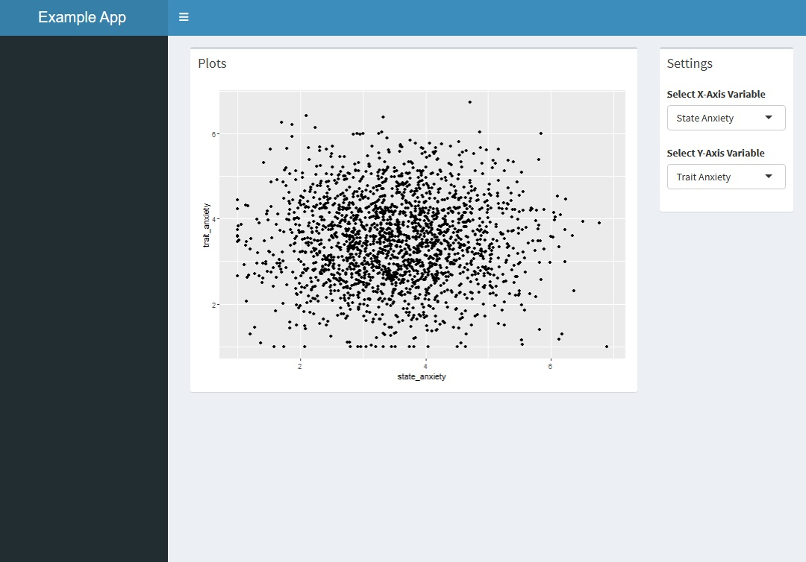
We could also quickly add a quick bit of flavor to our numerical plots by getting it to colour the plot by country (we will make this selectable later on!), and changing the theme. But that us it for aesthetic changes for this blog.
ggplot(data, aes(x = !!sym(input$xaxis), y = !!sym(input$yaxis), color = country)) +
geom_point() +
theme_minimal()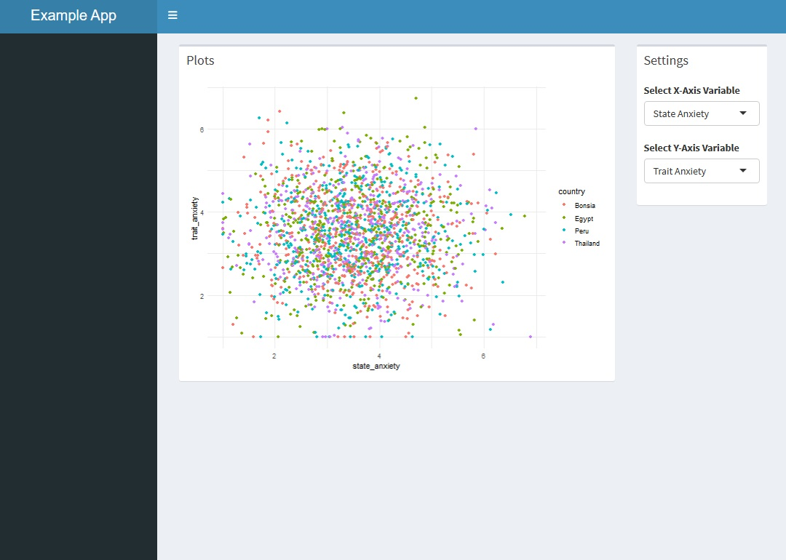
As we can see this plot works well for our numerical variables, but is less useful for our two categorical ones. So we are going to need different plots depending on our variables. This makes things a little more complicated. But fear not, it is easily achievable by making our output$plot1 call a function which tells it which plot to render, instead of rendering a plot directly.
So lets create a function that gives us different plots for different variable combinations. Specifically we will have 4 combinations:
X-axis categorical + Y-axis categorical X-axis categorical + Y-axis numeric X-axis numeric + Y-axis categorical X-axis numeric + Y-axis numeric
We will solve this by creating a function that returns different plots for different combinations. Here is the empty function with the arguments(things we put into the function) we are going to need. We will put this function in our server.R file before the server function.
plotFunction <- function(data, xvar, yvar){}We now add a series of if else statements to do our different plots
plotFunction <- function(data, xvar, yvar) {
#here we say that if xvar amd yvar are both factors (categorical), then run the plot code in the squiggly brakets
if (is.factor(data[[xvar]]) && is.factor(data[[yvar]])) {
#plot script here
}
}One way to plot two categorical variables is using a stacked bar chart, we will do that here as a somewhat hacky (it doesnt really use one variable as the y axis) example:
plotFunction <- function(data, xvar, yvar) {
#here we say that if xvar amd yvar are both factors (categorical), then run the plot code in the squiggly brackets
if (is.factor(data[[xvar]]) && is.factor(data[[yvar]])) {
ggplot(data,
aes(x = xvar,
fill = yvar)) +
geom_bar(position = "stack")
#Here we specify that if they are not, use our original plot (with the variables replaced to match those in our function)
} else {
ggplot(data, aes(x = xvar, y = xvar +
geom_point()))
}
}Ok we now have a simple function that can give us some different plots. Before we go further we should test it. To do this we first have to tell our server to use this function. We do this by updating output$plot1:
#here we specify that output plot1 (which is what we put in our box on our dashboard) should plot whatever comes out of the plotFunction function when we input xaxis (from our ui) as "xvar", and yaxis (from our ui) as "yvar"
output$plot1 <- renderPlot(plotFunction(
data = data,
xvar = !!!sym(input$xaxis),
yvar = !!sym(input$yaxis)
))So. server.Rshould look something like this now:
library(shiny)
library(shinydashboard)
library(tidyverse)
data <- read.csv("data.csv")
#### Plot function ####
plotFunction <- function(data, xvar, yvar) {
if (is.factor(data[[xvar]]) && is.factor(data[[yvar]])) {
ggplot(data,
aes(x = !!sym(xvar),
fill = !!sym(yvar))) +
geom_bar(position = "stack")
} else {
ggplot(data, aes(
x = !!sym(xvar),
y = !!sym(yvar),
color = country
)) +
geom_point() +
theme_minimal()
}
}
#### Server ####
server <- function(input, output) {
output$plot1 <- renderPlot(plotFunction(
data = data,
xvar = input$xaxis,
yvar = input$yaxis
))
}Go ahead and test it out! It should look like this:
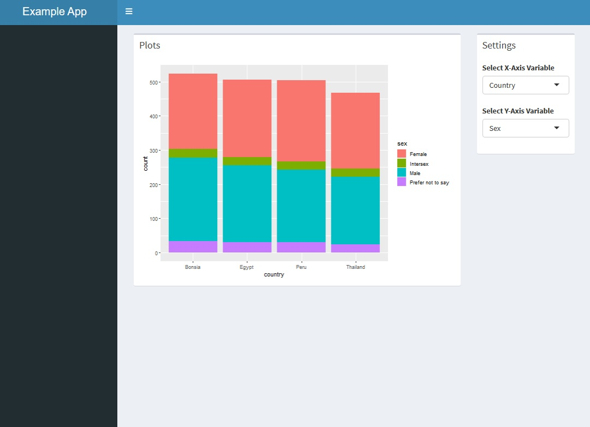
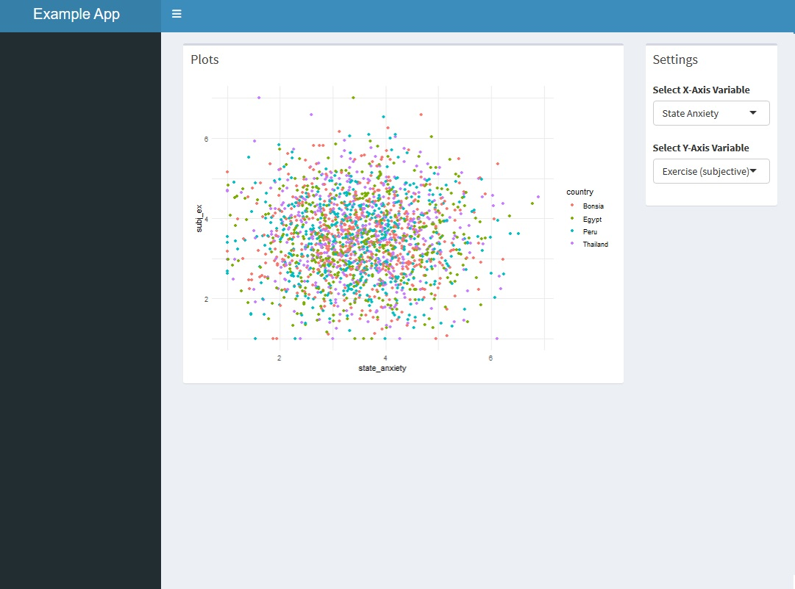
We can now go ahead and finish specifying our different plots. For plots where we have a categorical and a numerical variable we could use boxplots:
ggplot(data, aes(x = !!sym(xvar),
y = !!sym(yvar),
color = !!sym(xvar))) +
geom_boxplot(position = "dodge",
scale = 0.75,
width = 0.12)We can now add this to our function:
plotFunction <- function(data, xvar, yvar) {
if (is.factor(data[[xvar]]) && is.factor(data[[yvar]])) {
ggplot(data,
aes(x = !!sym(xvar),
fill = !!sym(yvar))) +
geom_bar(position = "stack") +
theme_minimal()
#we update the else to be an else if, saying that if x is a factor and y is numeric then run this plot
} else if (is.factor(data[[xvar]]) && is.numeric(data[[yvar]])) {
ggplot(data, aes(x = !!sym(xvar),
y = !!sym(yvar),
color = !!sym(xvar))) +
geom_boxplot(position = "dodge",
scale = 0.75,
width = 0.12) +
theme_minimal()
# now we do that the other way around
} else if (is.factor(data[[yvar]]) && is.numeric(data[[xvar]])) {
ggplot(data, aes(x = !!sym(yvar),
y = !!sym(xvar),
color = !!sym(yvar))) +
geom_boxplot(position = "dodge",
scale = 0.75,
width = 0.12) +
theme_minimal()
# we now just say if it was none of the above run our original scatter plot
} else {
ggplot(data, aes(x = !!sym(xvar),
y = !!sym(yvar),
color = country)) +
geom_point() +
theme_minimal()
}
}